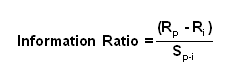

A ratio of portfolio returns above the returns of a benchmark (usually an index) to the volatility of those returns. The information ratio (IR) measures a portfolio manager's ability to generate excess returns relative to a benchmark, but also attempts to identify the consistency of the investor. This ratio will identify if a manager has beaten the benchmark by a lot in a few months or a little every month. The higher the IR the more consistent a manager is and consistency is an ideal trait.
Rp = Return of the portfolio Ri = Return of the index or benchmark Sp-i = Tracking error (standard deviation of the difference between returns of the portfolio and the returns of the index)
A high IR can be achieved by having a high return in the portfolio, a low return of the index and a low tracking error.
For example: Manager A might have returns of 13% and a tracking error of 8% Manager B has returns of 8% and tracking error of 4.5% The index has returns of -1.5% Manager A's IR = [13-(-1.5)]/8 = 1.81 Manager B's IR = [8-(-1.5)]/4.5 = 2.11
Manager B had lower returns but a better IR. A high ratio means a manager can achieve higher returns more efficiently than one with a low ratio by taking on additional risk. Additional risk could be achieved through leveraging.
{kind=link}